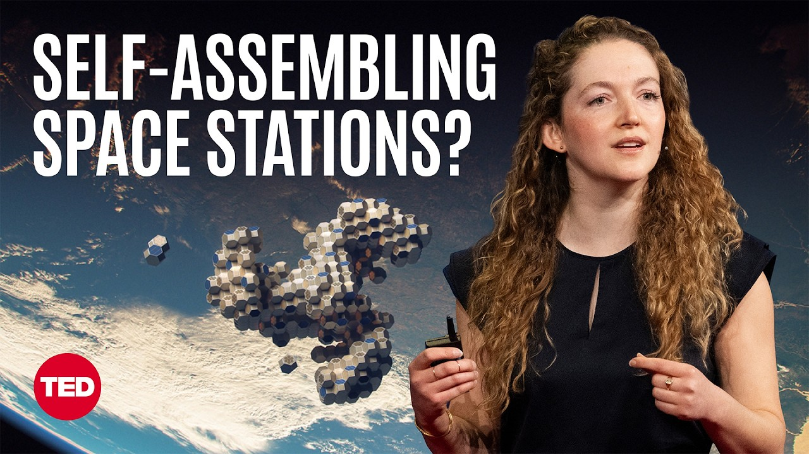

【TED 为地球建设太空：未来生活的新基础设施】
Summary: The speaker argues for the importance of space exploration, highlighting its inspirational and practical benefits, including technological advancements and potential solutions for Earth's challenges. She introduces her work on self-assembling space habitats and envisions a future where space infrastructure supports life on Earth.
摘要： 演讲者阐述了太空探索的重要性，强调其激励作用和实际效益，包括技术进步和解决地球挑战的潜力。她介绍了自己在自组装太空栖息地方面的工作，并展望了太空基础设施支持地球生命的未来。

⏱️ Estimated Reading Time: 13 min
📚 六级生词 📚 雅思生词 📚 托福生词 📚 专八生词 📚 SAT生词 📚 考研生词 📚 GRE生词 📚 高考生词
I once had a professor ask me, "Why in the world do we spend so much money on space exploration in the face of so many pressing challenges here on Earth?"
我曾有位教授问我：“地球上还有这么多紧迫的挑战，我们为什么还要花这么多钱探索太空？”
It's a good question and a tough one for me.
这是个好问题，也是个难题。
Should we be building a future life in space?
我们是否该在太空中建设未来生活？
I want to argue yes, and tell you how.
我想说“是的”，并告诉你们如何实现。
I do believe in the beauty of space exploration for the sake of new knowledge, because the little that we do know about our universe pales in comparison to what we do not yet know.
我坚信太空探索之美在于追求新知，因为我们对宇宙的已知相比未知微不足道。
And in some ways, it's in my blood.
某种程度上，这流淌在我的血液里。
My parents are both pilots.
我的父母都是飞行员。
My dad was an A-10 fighter pilot, and my mom was one of the first women to ever fly for the United States Air Force.
父亲是A-10攻击机飞行员，母亲是美国空军首批女飞行员之一。
And 14 years ago, I floated in microgravity like an astronaut for the first time.
14年前，我第一次像宇航员一样体验了微重力漂浮。
This inspired me to work in aerospace for the rest of my life.
这激励我毕生投身航空航天事业。
But space exploration does so much more than just inspire.
但太空探索远不止激励人心。
Our space program has routinely delivered breakthrough innovations.
我们的太空计划持续带来突破性创新。
The Apollo program gave us the foundation of modern computing.
阿波罗计划奠定了现代计算的基础。
The International Space Station gave us LASIK eye surgery, contributed to that amazing technology.
国际空间站带来了LASIK眼科手术，推动了这项惊人技术。
And now new technologies are coming online to enable life-saving biotech in orbit and even deliver energy from space.
如今新技术不断涌现，使轨道生物技术拯救生命，甚至从太空输送能源成为可能。
What makes all of this possible?
是什么让这一切成为可能？
In the last 15 years, the cost to get to space has dropped dramatically, from over 50,000 dollars a kilogram in the NASA Shuttle era, to now under 200 dollars a kilogram with SpaceX's Starship coming online.
过去15年，进入太空的成本大幅下降——从航天飞机时代每公斤5万美元降至如今星舰时代的不足200美元。
This is remarkable.
这非常了不起。
This is like FedEx.
这就像联邦快递。
If you can ship something around the world, you can ship it to space.
如果能把物品运往全球，就能运往太空。
But the precursor space station where so much of this amazing work has been taking place, the International Space Station, it's getting old, it's very cramped, and worse, it's about to be shut down.
但作为这些奇迹诞生地的国际空间站已老化、拥挤，更糟的是即将退役。
It's going to be decommissioned in 2030, 2031.
它将在2030至2031年退役。
We need new infrastructure and we need it fast.
我们需要新基础设施，且迫在眉睫。
Unfortunately, current in-space construction is quite slow, difficult and dangerous.
遗憾的是，当前太空建设缓慢、困难且危险。
This is a diagram of all of the pieces of the International Space Station.
这是国际空间站所有组件的示意图。
And they were assembled over 15 years like this.
它们像这样耗时15年组装。
By astronauts doing incredibly courageous and risky maneuvers in bulky spacesuits, basically building some of the most advanced technology known to humankind by hand.
宇航员穿着笨重航天服进行高风险操作，徒手建造人类最尖端科技。
This hand-built method doesn't scale.
这种手工方式难以扩展。
Even if the cost to go to space dropped even more dramatically tomorrow, we only have room for about 14 humans in orbit, period.
即使太空旅行成本再降，轨道上也仅能容纳约14人。
The bottleneck isn't rockets anymore.
瓶颈已非火箭。
It's real estate.
而是空间站。
And we need a new solution for how to build in orbit and scale up space infrastructure for the public good.
我们需要新方案来建设轨道设施，扩展造福公众的太空基建。
Nine years ago, I started working on this problem.
九年前我开始研究这个问题。
Could we learn from nature, from plants and proteins that self-assemble at a small scale and adapt this to the grandest scales in space?
能否向自然学习，将植物和蛋白质的小尺度自组装应用于太空宏大规模？
We know that when you're in free fall around a planet, you have the sensation of zero gravity.
我们知道绕行星自由落体时会感受失重。
In that environment, forces like magnetism can bring together vast objects with ease.
在此环境下，磁力等能轻松聚合大型物体。
So first at MIT and now at Aurelia Institute, my team and I have invented a system to do just this, to grow space structures in orbit using autonomous robotic self-assembly.
从MIT到如今Aurelia研究所，我们团队发明了轨道自主机器人自组装系统。
The idea behind the method is to allow us to build reconfigurable space stations that are bigger than our biggest rockets.
该方法旨在建造比最大火箭更庞大的可重构空间站。
Based on my MIT PhD, we use electropermanent magnets, very special strong magnets, that bring the modular tiles together to dock, to rendezvous.
基于我的MIT博士研究，我们使用特殊强电磁体使模块化单元对接。
Essentially, think about space Legos with magnets that click, click, click, click into place.
本质上是带磁铁的太空乐高，咔嗒咔嗒自动拼合。
Tesserae, what we call this space habitat, is a self-assembling structure.
我们称这种自组装结构为"Tesserae"太空栖息地。
So we ship the modular parts to their destination, wherever they're meant to be, and once the tiles or the modules arrive, they build themselves.
将模块运至目的地后，它们会自主组装。
So we don't require astronauts or even robotic arms to go out and do slow or risky spacewalks and space maneuvers.
无需宇航员或机械臂进行危险耗时的太空行走。
Here you can see that the tiles were packed flat for their ride to orbit, very efficiently.
可见模块以扁平高效方式运往轨道。
We like to joke on the team this is like a glorified Pez dispenser, if you guys remember the candies from the '90s, and from there, after the tiles have come together to form one buckyball, multiple buckyballs can dock to form a larger space station.
我们戏称这是升级版PEZ糖盒——90年代糖果——多个巴克球可对接组成更大空间站。
And the best part is that we have tested this in space twice.
最棒的是我们已在太空测试两次。
(Applause)
（掌声）
So here you can see Michael López-Alegría on orbit inside the International Space Station, helping us test the code and the timing and the pacing for dynamic robotic self-assembly in orbit.
这是Michael在国际空间站协助测试动态自组装代码与节奏。
From here we build and fly and test, we iteratively prototype, we simulate the physics to be able to fine-tune the construction method.
我们不断建造、飞行测试、迭代原型、模拟物理以优化建造方法。
And last year we built a human-scale mockup of our space habitat.
去年建造了全尺寸栖息地模型。
And we brought it on a roadshow across the country.
并举办全国巡展。
What we hope to communicate to the public with these interiors is a life worth living in space, or at least worth commuting to.
通过这些内饰向公众传达值得在太空生活或短期工作的理念。
Once we're in space, we can use the really unique environment of the vacuum of microgravity to manufacture things that can't be made on Earth.
利用太空独特的微重力真空环境制造地球无法生产之物。
In low-Earth orbit, we're working with partners to use the Tesserae construction technology to assemble large-volume, high throughput biotech factories.
在近地轨道，我们正与伙伴用Tesserae技术建造大容量生物技术工厂。
It turns out that in microgravity protein crystals grow differently, certain types of tissues grow faster or mature better, and we can even do novel drug discovery in a way that we can't do under the conditions of Earth gravity.
微重力下蛋白质晶体生长不同，某些组织更快成熟，还能以地球重力无法实现的方式研发新药。
We know that certain key biological samples behave differently in space, particularly when they're floating.
某些关键生物样本在太空漂浮时表现独特。
So whether it's exceptional quality organoids for testing Alzheimer's drugs or cancer drugs or artificial retinas that would cure macular degeneration, these therapies will be made in space, stabilized and brought back down to Earth.
无论是测试阿尔茨海默症/癌症药物的类器官，还是治疗黄斑变性的人工视网膜，都将在太空制造稳定后运回地球。
A little bit further out between Earth and the Sun we're working to see if we can help start-up energy companies self-assemble thousands of solar panels in orbit above the atmosphere.
在地日之间更远处，我们正协助能源初创公司在轨自组装数千太阳能板。
Now, what this would allow us to do is capture raw, unfiltered sunlight and beam it anywhere on Earth, even at night.
这将使我们捕获原始阳光并传输至地球任意地点，包括夜间。
This is like a flashlight from space, and it would fundamentally solve the storage problem for solar power, allowing us to deliver abundant green energy to the surface of the Earth.
这如同太空手电筒，从根本上解决太阳能存储问题，为地球输送充足绿色能源。
These are some of the most responsible ways that we could use space technology in service of Earth.
这些是以太空技术服务地球的最负责任方式。
My team and I have been working on an idea passionately, known for decades in science fiction as offworlding.
我们团队热忱研究科幻小说数十年的"离球化"概念。
Not offworlding the humans, but offworlding the heavy industry.
不是人类离球，而是重工业离球。
We could let Earth recover as a garden planet for generations to come, and use space infrastructure to do that offworlding.
让地球恢复为花园星球，用太空基建实现重工业离球。
And this future is a lot closer than you may think.
这未来比想象中更近。
While space travel definitely feels rarefied, and in many ways it certainly still is, I bring dozens of people with me every year into microgravity on parabolic flights.
尽管太空旅行仍显稀缺，但我每年都带数十人体验抛物线飞行微重力。
This is how NASA trains astronauts, affectionately known as the Vomit Comet.
NASA宇航员训练也采用此法，爱称"呕吐彗星"。
It's more fun than it sounds.
实际比听起来有趣。
And this is how we are training the new space generation.
我们正以此培养新一代太空人才。
We're building architecture to welcome more people to orbit, whether it's for a long weekend to see the planet from space for the first time, or maybe for a career scientist to commute for a decade to work on a major breakthrough.
我们建造轨道设施迎接更多人——无论是周末太空观地球的游客，还是为重大突破工作十年的科学家。
Rockets like Starship enable us to dream really big, to be able to get enough mass of Tesserae tiles and enough people into orbit to be able to fundamentally scale up space infrastructure for the public good.
星舰等火箭让我们敢于梦想——运送足够Tesserae模块和人员入轨，从根本上扩展造福公众的太空基建。
We know that the business case for space is here.
太空商业案例已然存在。
Governments are investing in space-based solar power, companies are investing in zero-G biotech and in the next 10 years, we believe that we will be able to deploy our first modularly self-assembling space habitat and contribute to a trillion-dollar space economy.
政府投资天基太阳能，企业投资零重力生物科技，未来十年我们将部署首个模块化自组装太空栖息地，助力万亿级太空经济。
And one of the best things we could do with this infrastructure is harness it for the profound benefit of life on Earth.
利用这些基础设施最大程度造福地球生命。
Because fundamentally, space exploration isn't about escaping Earth.
因为根本上，太空探索不是逃离地球。
In 1968, Bill Anders took this iconic photograph, now lovingly referred to as Earthrise, and he famously remarked, “We came all this way to explore the Moon and the most important thing is we discovered the Earth.”
1968年比尔·安德斯拍摄著名"地出"照片时说："我们远赴月球探索，却发现最重要的其实是地球。"
Bill's comment reminds us that space exploration is about building an aspirational future for humanity wherever we are: on Earth, in orbit around Earth or beyond.
比尔的话提醒我们：太空探索是为人类构建理想未来——无论在地球、轨道还是更远处。
Access to space is cheap enough now and available enough, we need to update our conception of the possible.
如今太空触手可及，我们需要更新对可能性的认知。
If we invest now in space infrastructure if we invest now in space architecture, new paradigms for how we can build infrastructure in space, we can profoundly expand humanity's horizons while still protecting the heritage of our priceless planet.
现在投资太空基建和建造范式，既能拓展人类疆域，又能保护无价地球。
We don't have to pick one or the other.
我们不必二选一。
Someday we will live on Mars.
终有一天我们会生活在火星。
Someday we will travel outside of the confines of our solar system.
终有一天我们会飞出太阳系。
But until then, let's put space to work for Earth.
但在那之前，让我们为地球开发太空。
Thank you.
谢谢。